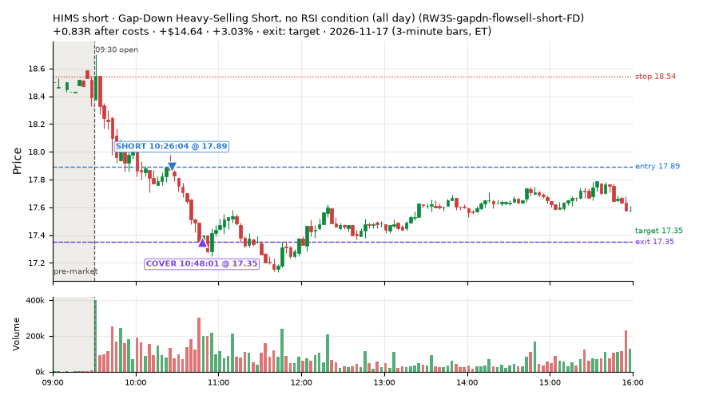
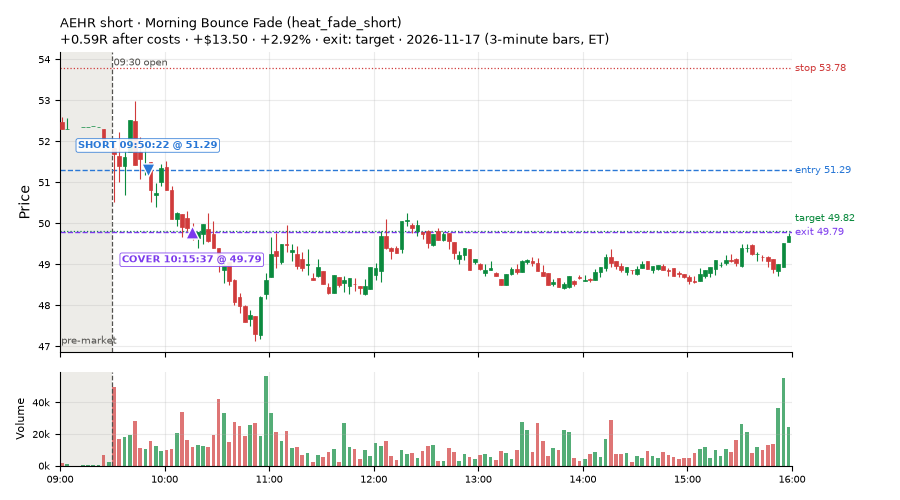
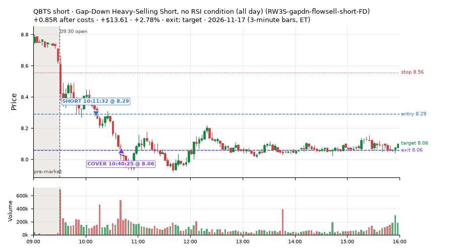
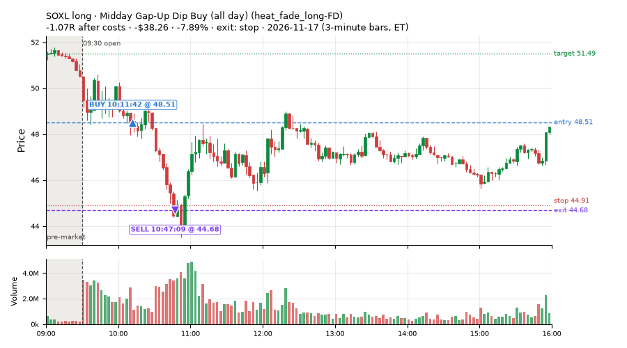
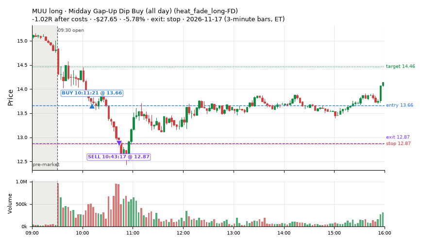
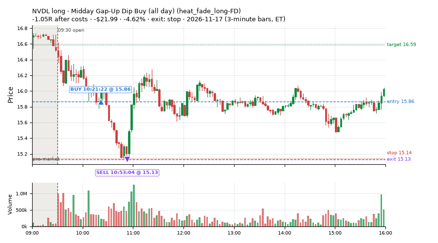
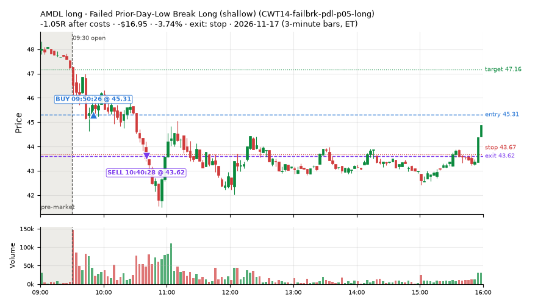
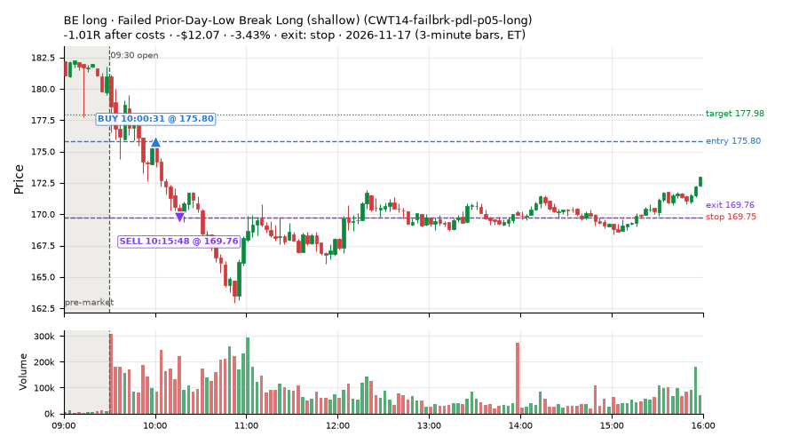

374 trades · win rate 39% · P/L $-641.30
PROBATION: no live setup has passed both locked test periods. 10 owner-directed setups added 2026-10-08 (MarcoFlow top 5 + 5 new), untested live. RW6G1 (RW6 + VWAP band guard) added 2026-10-09, probation.

| Symbol | Setup | Side | In | Out | Entry | Exit | Exit reason | % gained | P/L |
|---|---|---|---|---|---|---|---|---|---|
| HIMS | Gap-Down Heavy-Selling Short, no RSI condition (all day) (RW3S-gapdn-flowsell-short-FD) | short | 10:26 | 10:48 | 17.89 | 17.35 | target | +3.03% | $14.64 |
| AEHR | Morning Bounce Fade (heat_fade_short) | short | 09:50 | 10:15 | 51.29 | 49.79 | target | +2.92% | $13.50 |
| QBTS | Gap-Down Heavy-Selling Short, no RSI condition (all day) (RW3S-gapdn-flowsell-short-FD) | short | 10:11 | 10:40 | 8.29 | 8.06 | target | +2.78% | $13.61 |
| Symbol | Setup | Side | In | Out | Entry | Exit | Exit reason | % lost | P/L |
|---|---|---|---|---|---|---|---|---|---|
| SOXL | heat_fade_long-FD | long | 10:11 | 10:47 | 48.51 | 44.68 | stop | -7.89% | $-38.26 |
| MUU | heat_fade_long-FD | long | 10:11 | 10:43 | 13.66 | 12.87 | stop | -5.78% | $-27.65 |
| NVDL | heat_fade_long-FD | long | 10:21 | 10:53 | 15.86 | 15.13 | stop | -4.62% | $-21.99 |
| AMDL | CWT14-failbrk-pdl-p05-long | long | 09:50 | 10:40 | 45.31 | 43.62 | stop | -3.74% | $-16.95 |
| BE | CWT14-failbrk-pdl-p05-long | long | 10:00 | 10:15 | 175.80 | 169.76 | stop | -3.43% | $-12.07 |








Signal to fill: median 2s, 90th percentile 4s (374 trades). Bars close each minute; the order follows the bar close.
Best excursion (MFE): median 0.35R; worst (MAE) median 1.01R. 38% of trades never got +0.25R in our favour; 1 reached +1R and still closed at or below 0.
| Symbol | Setup | Best R | Worst R | Closed R |
|---|---|---|---|---|
| VICI | CWT12-coil-k4-long | +0.98 | -0.98 | -1.21 |
| VST | NS5-sma50-flush-oversold-long-FD | +1.36 | -0.76 | -0.78 |
| TW | CWT14-failbrk-orl-p05-lowvol-long | +0.80 | -1.21 | -1.32 |
| TW | CWT14-failbrk-orl-p05-long | +0.80 | -1.21 | -1.32 |
| QCOM | heat_fade_long-FD | +0.96 | -1.04 | -1.09 |
| Entry time | Trades | Win | Avg R | P/L |
|---|---|---|---|---|
| 09:50-10:30 | 328 | 37% | -0.52 | $-659.20 |
| 10:30-11:30 | 46 | 52% | -0.17 | $17.90 |
| Setup | Trades | Win | Avg R after costs | Adj R (net of SPY) | Avg R ex-market (all sessions) | P/L |
|---|---|---|---|---|---|---|
| Gap-Down Bounce Rejection Short (5% gap) (CWT09-gapdn-bounce-g5-lowerhalf-short) | 1.0 | 0% | -0.12 | -0.23 | -0.33 (beta -1.08, n 146) | $-2.34 |
| Gap-Down VWAP Loss Short (5% gap) (CWT09-gapdn-vwaploss-g5-short) | 2.0 | 50% | +0.08 | -0.18 | -0.42 (beta -3.35, n 139) | $1.13 |
| Coil Under the High (4 bars) (CWT12-coil-k4-long) | 19.0 | 21% | -0.86 | +0.06 | -0.15 (beta +0.57, n 545) | $-55.22 |
| Coil Under the High (6 bars) (CWT12-coil-k6-long) | 2.0 | 0% | -1.17 | -0.64 | -0.22 (beta +1.48, n 181) | $-6.81 |
| Failed Opening-Range-Low Break Long (0.05 ATR) [fill] (CWT14-failbrk-orl-p05-long) | 14.0 | 21% | -0.83 | -0.36 | -0.09 (beta +0.83, n 1027) | $-48.49 |
| Failed Opening-Range-Low Break Long (0.05 ATR, low volume) [fill] (CWT14-failbrk-orl-p05-lowvol-long) | 37.0 | 19% | -0.88 | -0.28 | -0.07 (beta +0.88, n 954) | $-149.35 |
| Failed Opening-Range-Low Break Long (0.1 ATR) [fill] (CWT14-failbrk-orl-p10-long) | 32.0 | 6% | -1.02 | -0.16 | -0.09 (beta +0.96, n 618) | $-123.03 |
| Failed Opening-Range-Low Break Long (low volume) (CWT14-failbrk-orl-p10-lowvol-long) | 27.0 | 7% | -1.03 | -0.22 | -0.06 (beta +0.96, n 639) | $-108.94 |
| Failed Prior-Day-High Break Short (0.05 ATR, low volume) [fill] (CWT14-failbrk-pdh-p05-lowvol-short) | 24.0 | 92% | +0.27 | -0.18 | -0.15 (beta -0.70, n 417) | $63.52 |
| Failed Prior-Day-High Break Short (low volume) (CWT14-failbrk-pdh-p10-lowvol-short) | 7.0 | 100% | +0.49 | -0.04 | -0.16 (beta -0.91, n 213) | $23.72 |
| Failed Prior-Day-High Break Short (0.1 ATR) [fill] (CWT14-failbrk-pdh-p10-short) | 17.0 | 100% | +0.50 | +0.06 | -0.16 (beta -1.11, n 369) | $51.40 |
| Failed Prior-Day-Low Break Long (shallow) (CWT14-failbrk-pdl-p05-long) | 71.0 | 27% | -0.74 | -0.18 | -0.15 (beta +0.94, n 402) | $-190.34 |
| Failed Prior-Day-Low Break Long (0.05 ATR, low volume) [fill] (CWT14-failbrk-pdl-p05-lowvol-long) | 40.0 | 15% | -0.90 | -0.03 | -0.11 (beta +0.96, n 332) | $-125.58 |
| Opening-Range Low Sweep Reversal (LIQ-orl-sweep-open15-s25-long) | 2.0 | 0% | -1.16 | -0.66 | -0.15 (beta +0.40, n 248) | $-6.02 |
| Early Sellers Above VWAP (all day) (MF1-945-flowsell-vwapup-FD) | 5.0 | 60% | +0.28 | -0.69 | -0.18 (beta -1.80, n 107) | $4.63 |
| Early Sellers into a Pop (all day) (MF3-open-flowsell-rsi5hi-FD) | 7.0 | 100% | +0.78 | -0.08 | -0.09 (beta -0.91, n 148) | $19.10 |
| Sellers into Strength (full-day copy) (MF5-flowsell-vwapup-rsi5hi-FD) | 5.0 | 100% | +0.76 | +0.28 | +0.00 (beta -1.21, n 89) | $12.92 |
| Big Gainer Average Reclaim Fade (all day) (NS2-sma50break-overbought-short-FD) | 2.0 | 100% | +0.68 | +0.32 | -0.06 (beta -1.10, n 216) | $13.50 |
| Big Loser Flush Buy (all day) (NS5-sma50-flush-oversold-long-FD) | 1.0 | 0% | -0.78 | -1.05 | -0.12 (beta +1.00, n 34) | $-3.57 |
| Big-Stock Blow-off Short (all day) (RW2-exhaustion-noon-adv150-short-FD) | 4.0 | 100% | +0.92 | +0.24 | -0.33 (beta -0.99, n 321) | $14.86 |
| Gap-Down Heavy-Selling Short, no RSI condition (all day) (RW3S-gapdn-flowsell-short-FD) | 23.0 | 83% | +0.39 | +0.05 | -0.07 (beta -0.56, n 55) | $75.89 |
| Big Gainer Fade, VWAP Band Guard (all day) (RW6G1-ns2-up3-vwap2sd-short-FD) | 1.0 | 100% | +0.82 | +0.84 | +0.13 (beta -0.40, n 36) | $10.26 |
| Opening-Range Breakdown Buy (all day) (ST1-ordn-long-pm-t05s1-FD) | 1.0 | 100% | +0.83 | +0.60 | -0.07 (beta +1.23, n 46) | $8.92 |
| Midday Gap-Up Dip Buy (all day) (heat_fade_long-FD) | 16.0 | 0% | -1.05 | -0.78 | -0.18 (beta +1.18, n 165) | $-209.93 |
| Morning Bounce Fade (heat_fade_short) failed Apr-Jun holdout: -0.015R/trade over 1420 trades | 14.0 | 100% | +0.69 | +0.34 | -0.20 (beta -0.96, n 254) | $88.47 |
Market direction (SPY, beta 1) accounted for $-408.92 of today's $-641.30; the rest ($-232.38) came from the setups themselves. Avg R net of SPY: -0.14 (incl. a hedge leg's cost; report only).
32 setups live today. Today: 2815 signals, 374 taken, 33 lost because another setup held the symbol (1%). Since 2026-10-21 (20 sessions): 29178 signals, 9153 taken, 1317 lost to other setups (4%). Peak open positions today 239 of 300 slots. Earnings blackout removed 329 symbols before scanning.
Simulated playing time (not live): 19968 what-if trades of signals not taken, avg -0.05R, 56% winners; of them 1316 lost to another setup (avg -0.03R).
Crowded out: NS2-sma50break-overbought-short · Starved: MF1-945-flowsell-vwapup-FD, heat_fade_long, heat_fade_long-FD, heat_fade_short-FD
| Prio | Setup | Today sig / taken | Sessions | Signals / taken / trades | Taken/day | Expected/day | Lost to other setups | Lost to (setup n) | Top skip reasons | SIMULATED: not-taken n / avg R / win | Verdict |
|---|---|---|---|---|---|---|---|---|---|---|---|
| 1 | Opening-Range Breakdown Buy (all day) ST1-ordn-long-pm-t05s1-FD | 4 / 1 | 20 | 70 / 46 / 46 | 2.30 | 3.49 | 1 | heat_fade_short-FD 1 | spread / quote / size 14, slots full 3, daily loss cap 3 | 24 / -0.05R / 54% | slow 11.5 entries/week; ~5 weeks to 60 trades |
| 2 | Big Gainer Average Reclaim Fade (all day) NS2-sma50break-overbought-short-FD | 11 / 2 | 20 | 461 / 216 / 216 | 10.80 | 17.08 | 16 | CWT12-coil-k4-long 11, CWT12-coil-k6-long 5, LIQ-orl-sweep-open15-s25-long 3 | not shortable / shorts off 64, spread / quote / size 64, per-setup cap 42 | 245 / +0.27R / 71% | ok 54.0 entries/week |
| 3 | Big Gainer Average Reclaim Fade NS2-sma50break-overbought-short | 6 / 0 | 20 | 226 / 8 / 8 | 0.40 | 5.74 | 129 | NS2-sma50break-overbought-short-FD 115, RW6-ns2-up3-short-FD 56, CWT12-coil-k4-long 10 | symbol held by another setup 129, spread / quote / size 52, not shortable / shorts off 21 | 218 / +0.40R / 77% | crowded-out 129 of 226 signals (57%) lost to setups already holding the symbol |
| 4 | Early Sellers Above VWAP (all day) MF1-945-flowsell-vwapup-FD | 9 / 5 | 20 | 365 / 107 / 107 | 5.35 | 23.94 | 8 | CWT12-coil-k4-long 5, CWT14-failbrk-orl-p05-long 2, CWT12-coil-k6-long 1 | daily loss cap 131, spread / quote / size 79, broker rejected 15 | 258 / -0.16R / 33% | starved 5.35 entries/day vs ~23.94 expected |
| 5 | Down-Stock Trend-Turn Buy (all day) ST2-slope20up-long-am-t05s1-FD | 81 / 0 | 20 | 763 / 267 / 267 | 13.35 | 24.03 | 41 | heat_fade_short-FD 21, CWT09-gapdn-bounce-g5-lowerhalf-short 8, CWT14-failbrk-orl-p10-lowvol-long 4 | daily loss cap 300, spread / quote / size 62, slots full 50 | 493 / -0.00R / 62% | ok 66.8 entries/week |
| 6 | Midday Gap-Up Dip Buy heat_fade_long | 8 / 0 | 20 | 212 / 125 / 125 | 6.25 | 30.36 | 21 | heat_fade_long-FD 12, NS3-failed-vwap-reclaim-short-FD 3, RW4-ns3-adv150-short-FD 3 | spread / quote / size 27, daily loss cap 23, symbol held by another setup 21 | 87 / -0.08R / 52% | starved 6.25 entries/day vs ~30.36 expected |
| 7 | Opening-Range Low Sweep Reversal LIQ-orl-sweep-open15-s25-long | 26 / 2 | 20 | 473 / 248 / 248 | 12.40 | – | 18 | CWT14-failbrk-orl-p05-lowvol-long 15, CWT14-failbrk-orl-p10-long 14, CWT14-failbrk-orl-p10-lowvol-long 13 | daily loss cap 68, spread / quote / size 59, per-setup cap 57 | 225 / -0.07R / 43% | ok 62.0 entries/week |
| 8 | Big-Stock Blow-off Short (all day) RW2-exhaustion-noon-adv150-short-FD | 33 / 4 | 20 | 967 / 321 / 321 | 16.05 | 50.34 | 16 | CWT12-coil-k4-long 5, NS3-failed-vwap-reclaim-short-FD 4, RW4-ns3-adv150-short-FD 4 | daily loss cap 395, not shortable / shorts off 103, spread / quote / size 85 | 646 / -0.03R / 52% | ok 80.2 entries/week |
| 9 | Midday Gap-Up Dip Buy (all day) heat_fade_long-FD | 119 / 16 | 20 | 563 / 165 / 165 | 8.25 | 51.74 | 60 | heat_fade_long 49, heat_fade_short 5, heat_fade_short-FD 4 | daily loss cap 247, spread / quote / size 87, symbol held by another setup 60 | 398 / +0.04R / 55% | starved 8.25 entries/day vs ~51.74 expected |
| 10 | Failed Opening-Range-Low Break Long (low volume) CWT14-failbrk-orl-p10-lowvol-long | 121 / 27 | 20 | 1290 / 639 / 639 | 31.95 | – | 14 | CWT14-failbrk-orl-p05-long 4, CWT14-failbrk-pdh-p05-lowvol-short 4, CWT14-failbrk-orl-p05-lowvol-long 3 | spread / quote / size 262, daily loss cap 233, slots full 75 | 647 / +0.05R / 60% | ok 159.8 entries/week |
| 11 | Failed Opening-Range-Low Break Long (0.1 ATR) [fill] CWT14-failbrk-orl-p10-long | 141 / 32 | 20 | 1524 / 618 / 618 | 30.90 | – | 27 | CWT14-failbrk-orl-p05-lowvol-long 17, CWT14-failbrk-orl-p05-long 17, CWT14-failbrk-orl-p10-lowvol-long 16 | daily loss cap 464, spread / quote / size 280, per-setup cap 53 | 901 / +0.01R / 62% | ok 154.5 entries/week |
| 12 | Morning Bounce Fade heat_fade_short | 27 / 14 | 20 | 602 / 254 / 254 | 12.70 | 31.76 | 1 | CWT14-failbrk-pdl-p05-lowvol-long 1 | spread / quote / size 152, per-setup cap 110, daily loss cap 59 | 348 / -0.18R / 41% | ok 63.5 entries/week |
| 13 | Failed Opening-Range-Low Break Long (0.05 ATR, low volume) [fill] CWT14-failbrk-orl-p05-lowvol-long | 320 / 37 | 20 | 2964 / 954 / 954 | 47.70 | – | 43 | CWT14-failbrk-orl-p10-lowvol-long 14, CWT14-failbrk-orl-p10-long 13, CWT14-failbrk-orl-p05-long 11 | daily loss cap 1143, spread / quote / size 412, per-setup cap 198 | 2004 / -0.05R / 60% | ok 238.5 entries/week |
| 14 | Morning Bounce Fade (all day) heat_fade_short-FD | 168 / 0 | 20 | 1798 / 496 / 496 | 24.80 | 173.78 | 336 | heat_fade_short 254, LIQ-orl-sweep-open15-s25-long 20, CWT14-failbrk-orl-p05-lowvol-long 14 | daily loss cap 448, symbol held by another setup 336, spread / quote / size 253 | 1302 / -0.02R / 49% | starved 24.80 entries/day vs ~173.78 expected |
| 15 | Failed Opening-Range-Low Break Long (0.05 ATR) [fill] CWT14-failbrk-orl-p05-long | 399 / 14 | 20 | 3951 / 1027 / 1027 | 51.35 | – | 204 | CWT14-failbrk-orl-p10-lowvol-long 165, CWT14-failbrk-orl-p10-long 164, CWT14-failbrk-orl-p05-lowvol-long 162 | daily loss cap 1691, spread / quote / size 511, per-setup cap 325 | 2918 / -0.09R / 59% | ok 256.8 entries/week |
| 16 | Gap-Down Bounce Rejection Short (5% gap) CWT09-gapdn-bounce-g5-lowerhalf-short | 3 / 1 | 20 | 980 / 146 / 146 | 7.30 | – | 13 | CWT14-failbrk-pdl-p05-lowvol-long 4, CWT12-coil-k4-long 3, CWT14-failbrk-pdl-p05-long 3 | not shortable / shorts off 571, daily loss cap 99, spread / quote / size 89 | 830 / -0.04R / 48% | ok 36.5 entries/week |
| 17 | Failed Prior-Day-High Break Short (0.05 ATR, low volume) [fill] CWT14-failbrk-pdh-p05-lowvol-short | 63 / 24 | 19 | 1208 / 417 / 417 | 21.95 | – | 12 | CWT14-failbrk-orl-p10-long 4, CWT14-failbrk-orl-p05-long 4, CWT12-coil-k4-long 4 | daily loss cap 423, spread / quote / size 269, not shortable / shorts off 59 | 789 / -0.02R / 64% | ok 109.7 entries/week |
| 18 | Failed Prior-Day-High Break Short (low volume) CWT14-failbrk-pdh-p10-lowvol-short | 23 / 7 | 19 | 510 / 213 / 213 | 11.21 | – | 6 | CWT14-failbrk-orl-p10-long 3, CWT14-failbrk-orl-p05-long 3, CWT14-failbrk-orl-p05-lowvol-long 2 | spread / quote / size 154, daily loss cap 103, not shortable / shorts off 21 | 296 / -0.05R / 63% | ok 56.1 entries/week |
| 19 | Failed Prior-Day-High Break Short (0.1 ATR) [fill] CWT14-failbrk-pdh-p10-short | 56 / 17 | 18 | 838 / 369 / 369 | 20.50 | – | 13 | CWT14-failbrk-orl-p10-long 5, CWT14-failbrk-pdh-p05-lowvol-short 3, CWT14-failbrk-pdh-p10-lowvol-short 3 | spread / quote / size 273, daily loss cap 105, not shortable / shorts off 51 | 468 / -0.07R / 62% | ok 102.5 entries/week |
| 20 | Stretched Above VWAP Fade CWT13-vwapstretch-z05-short | 13 / 0 | 18 | 350 / 142 / 142 | 7.89 | – | 3 | LIQ-orl-sweep-open15-s25-long 1, CWT12-coil-k4-long 1, CWT12-coil-k6-long 1 | daily loss cap 135, not shortable / shorts off 32, spread / quote / size 25 | 208 / -0.13R / 45% | ok 39.4 entries/week |
| 21 | Gap-Down VWAP Loss Short (5% gap) CWT09-gapdn-vwaploss-g5-short | 7 / 2 | 17 | 1082 / 139 / 139 | 8.18 | – | 14 | CWT14-failbrk-orl-p05-long 5, CWT14-failbrk-pdl-p05-long 3, CWT14-failbrk-pdl-p05-lowvol-long 3 | not shortable / shorts off 678, spread / quote / size 97, slots full 60 | 931 / -0.22R / 35% | ok 40.9 entries/week |
| 22 | Coil Under the High (6 bars) CWT12-coil-k6-long | 10 / 2 | 16 | 629 / 181 / 181 | 11.31 | – | 27 | heat_fade_short 7, CWT14-failbrk-pdh-p10-short 6, RW2-exhaustion-noon-adv150-short-FD 4 | daily loss cap 205, spread / quote / size 150, broker rejected 54 | 448 / +0.08R / 44% | ok 56.6 entries/week |
| 23 | Coil Under the High (4 bars) CWT12-coil-k4-long | 39 / 19 | 14 | 1474 / 545 / 545 | 38.93 | – | 57 | RW2-exhaustion-noon-adv150-short-FD 16, CWT14-failbrk-pdh-p10-short 11, CWT14-failbrk-pdh-p05-lowvol-short 10 | per-setup cap 493, spread / quote / size 159, broker rejected 154 | 926 / -0.02R / 66% | ok 194.6 entries/week |
| 24 | Failed Prior-Day-Low Break Long (shallow) CWT14-failbrk-pdl-p05-long | 380 / 71 | 13 | 1897 / 402 / 402 | 30.92 | – | 6 | CWT14-failbrk-orl-p10-lowvol-long 3, CWT14-failbrk-orl-p10-long 3, CWT14-failbrk-orl-p05-lowvol-long 3 | daily loss cap 1222, spread / quote / size 248, broker rejected 13 | 1489 / -0.12R / 58% | ok 154.6 entries/week |
| 25 | Failed Prior-Day-Low Break Long (0.05 ATR, low volume) [fill] CWT14-failbrk-pdl-p05-lowvol-long | 273 / 40 | 13 | 1346 / 332 / 332 | 25.54 | – | 26 | CWT14-failbrk-orl-p05-lowvol-long 22, CWT14-failbrk-orl-p05-long 15, CWT14-failbrk-orl-p10-long 13 | daily loss cap 744, spread / quote / size 216, symbol held by another setup 26 | 1010 / -0.09R / 60% | ok 127.7 entries/week |
| 26 | Big Loser VWAP Reclaim Fade (all day) NS3-failed-vwap-reclaim-short-FD | 130 / 0 | 12 | 767 / 146 / 146 | 12.17 | 22.02 | 75 | NS3-failed-vwap-reclaim-short-FD 21, ST2-slope20up-long-am-t05s1-FD 19, RW4-ns3-adv150-short-FD 19 | daily loss cap 298, not shortable / shorts off 101, slots full 85 | 621 / -0.08R / 44% | ok 60.8 entries/week |
| 27 | Big-Stock VWAP Reclaim Fade (all day) RW4-ns3-adv150-short-FD | 115 / 0 | 12 | 592 / 101 / 101 | 8.42 | 17.34 | 89 | NS3-failed-vwap-reclaim-short-FD 42, RW4-ns3-adv150-short-FD 40, ST2-slope20up-long-am-t05s1-FD 17 | daily loss cap 213, symbol held by another setup 89, slots full 78 | 491 / -0.10R / 42% | ok 42.1 entries/week |
| 28 | Early Sellers into a Pop (all day) MF3-open-flowsell-rsi5hi-FD | 19 / 7 | 11 | 289 / 148 / 148 | 13.45 | 24.16 | 4 | ST2-slope20up-long-am-t05s1-FD 1, heat_fade_long 1, CWT14-failbrk-orl-p05-long 1 | daily loss cap 53, broker rejected 27, not shortable / shorts off 22 | 141 / -0.03R / 49% | ok 67.3 entries/week |
| 29 | Sellers into Strength (full-day copy) MF5-flowsell-vwapup-rsi5hi-FD | 7 / 5 | 11 | 179 / 89 / 89 | 8.09 | 15.47 | 2 | heat_fade_short 1, MF1-945-flowsell-vwapup-FD 1, MF3-open-flowsell-rsi5hi-FD 1 | broker rejected 33, daily loss cap 31, spread / quote / size 12 | 90 / -0.10R / 46% | ok 40.5 entries/week |
| 30 | Big Loser Flush Buy (all day) NS5-sma50-flush-oversold-long-FD | 11 / 1 | 10 | 78 / 34 / 34 | 3.40 | 6.32 | 5 | NS3-failed-vwap-reclaim-short-FD 3, RW4-ns3-adv150-short-FD 3, ST4-emadn-long-am-t1s05-FD 1 | daily loss cap 24, spread / quote / size 7, broker rejected 6 | 44 / -0.03R / 48% | ok 17.0 entries/week |
| 31 | Big Gainer Fade, VWAP Band Guard (all day) RW6G1-ns2-up3-vwap2sd-short-FD | 7 / 1 | 10 | 74 / 36 / 36 | 3.60 | 3.73 | 4 | RW6-ns2-up3-short-FD 3, NS2-sma50break-overbought-short-FD 2, RW6G1-ns2-up3-vwap2sd-short-FD 2 | not shortable / shorts off 26, symbol held by another setup 4, broker rejected 4 | 38 / +0.07R / 55% | ok 18.0 entries/week |
| 32 | Gap-Down Heavy-Selling Short, no RSI condition (all day) RW3S-gapdn-flowsell-short-FD | 186 / 23 | 2 | 323 / 55 / 55 | 27.50 | – | 7 | CWT12-coil-k4-long 3, CWT14-failbrk-pdl-p05-long 2, MF1-945-flowsell-vwapup-FD 1 | daily loss cap 177, spread / quote / size 56, not shortable / shorts off 24 | 268 / +0.10R / 59% | ok 137.5 entries/week |
Every trade is attached as a CSV you can open and edit in Excel or Google Sheets. Live page: https://misiti15.github.io/MCF/live/